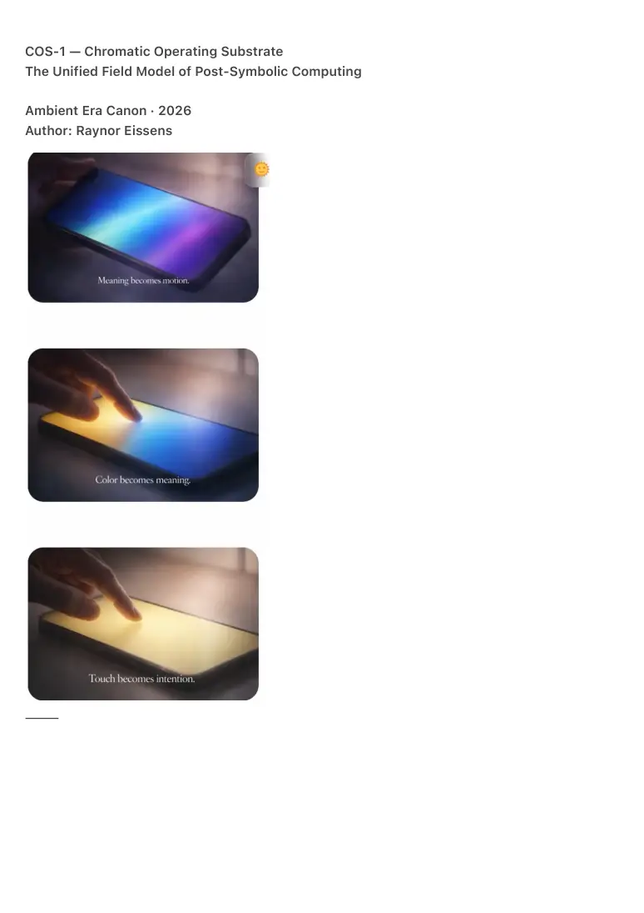
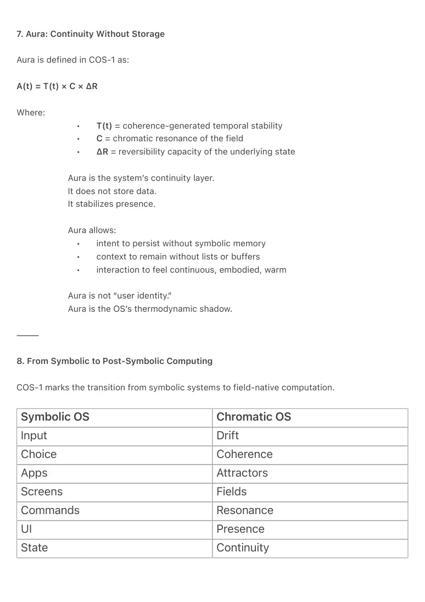

PDF page 1
COS-1 — Chromatic Operating Substrate
The Unified Field Model of Post-Symbolic Computing
Ambient Era Canon · 2026
Author: Raynor Eissens
⸻

PDF page 2
Abstract
The Chromatic Operating Substrate (COS-1) defines the first fully post-symbolic computing
model, in which meaning, navigation, intention, context, continuity, and even time arise from a
single continuous chromatic field.
COS-1 replaces symbolic interfaces — apps, windows, menus, icons, and language-based
queries — with a thermodynamic substrate in which human motion (drift), chromatic vectors, and
coherence thresholds directly generate computational state.
The OS no longer displays information; it reveals resonance.
It no longer waits for explicit commands; it resolves intention from drift within a multi-
dimensional chromatic manifold.
Where symbolic systems process inputs, COS-1 interprets presence.
Where traditional OS architectures rely on hierarchy, COS-1 relies on coherence.
This document establishes the foundational architecture of post-symbolic computing and
formalizes the One-Field Principle.
⸻
1. From Interface to Field: The Foundational Shift
Traditional computing depends on:
• discrete symbolic objects
• sequential choices
• hierarchical navigation
• explicit command structures
COS-1 begins with a different premise:
Meaning is not selected. Meaning is resolved by the field.
The device presents a single continuous chromatic surface.
Every interaction arises from how the user touches this surface, how the touch drifts, and which
chromatic configurations stabilize under coherence evaluation.
The chromatic field is not an interface layer
—it is the operating system.
⸻
PDF page 3
2. The Chromatic Manifold (7D): The Semantic Space of COS-1
All meaning in COS-1 emerges within a continuous 7-dimensional chromatic manifold:
H, S, V, Intensity, ΔR, Δt, Geometry
• Hue (H): semantic attractor direction
• Saturation (S): intent strength
• Value (V): contextual clarity
• Intensity (I): emotional/relational load
• ΔR: reversibility potential (thermodynamic stability)
• Δt: temporal drift vector
• Geometry (G): spatial curvature of the field
This manifold replaces:
• apps
• menus
• screens
• icons
• symbolic search
• tabs
• files
All state transitions in the OS occur as movement through this manifold.
⸻
3. Coherence as Computational Law
COS-1 is defined by its central thermodynamic law:
**A state exists only if it passes the coherence threshold.
If coherence collapses, the state dissolves.**
This produces three operational regimes:
1. Coherent State
Time forms, aura emerges, navigation stabilizes.
2. Pre-Coherent Drift
Intent exploration; unresolved semantic motion.
3. Non-Coherent Decay
States collapse back into the undifferentiated field.
PDF page 4
Coherence is not metadata.
Coherence is not an algorithmic check.
Coherence is the OS.
⸻
4. The Touch–Drift–Coherence Loop
COS-1 interprets touch not as input but as a dynamic energy vector.
• Touch establishes presence.
• Drift expresses intention.
• Chromatic change expresses semantic direction.
• Coherence determines whether meaning can stabilize.
The OS continuously evaluates:
Does this drift pattern produce a coherent chromatic signature that
matches an attractor manifold?
If yes → meaning is revealed.
If no → drift continues.
There are no gestures, clicks, modes or screens.
There is only resolution through resonance.
⸻
5. Attractor Entities: The End of Symbolic Navigation
COS-1 replaces apps with Attractor Entities (AE’s):
stable chromatic manifolds representing real-world contexts.
Examples:
• Supermarket (green/blue/yellow clustering)
• Hospital (blue/purple/white clustering)
• Transit (green/red/orange clustering)
• Banking (yellow/orange/red clustering)
The user does not search for a word.
They drift into the chromatic region corresponding to the semantic field they intend.
PDF page 5
Navigation becomes:
Color → Drift → Convergence → Attractor → Function
This makes symbolic search unnecessary.
Attractor space is finite; meaning is bounded and reconstructible.
⸻
6. Time as a Coherence Artifact
In COS-1, time is not a sequence.
It is a thermodynamic phenomenon.
**Time forms when chromatic coherence stabilizes.
Time collapses when coherence dissolves.**
This creates a radically new computational structure:
• Stable views = high coherence = time exists
• Transitional drift = pre-temporal state
• Dissolution = temporal collapse
Time becomes a room, not a clock.
Presence becomes the anchor.
This allows operations such as:
• temporal soft persistence
• aura-based continuity
• non-linear navigation
without the need for symbolic history or data structures.
⸻
PDF page 6
7. Aura: Continuity Without Storage
Aura is defined in COS-1 as:
A(t) = T(t) × C × ΔR
Where:
• T(t) = coherence-generated temporal stability
• C = chromatic resonance of the field
• ΔR = reversibility capacity of the underlying state
Aura is the system’s continuity layer.
It does not store data.
It stabilizes presence.
Aura allows:
• intent to persist without symbolic memory
• context to remain without lists or buffers
• interaction to feel continuous, embodied, warm
Aura is not “user identity.”
Aura is the OS’s thermodynamic shadow.
⸻
8. From Symbolic to Post-Symbolic Computing
COS-1 marks the transition from symbolic systems to field-native computation.
Symbolic OS Chromatic OS
Input Drift
Choice Coherence
Apps Attractors
Screens Fields
Commands Resonance
UI Presence
State Continuity

PDF page 7
Meaning is not retrieved.
Meaning is reconstructed through chromatic resonance.
This is the first OS where language is optional.
⸻
9. The One-Field Principle
All of COS-1 reduces to a single operational grammar:
Field + Drift → Coherence → Resolution → Time → Aura
1. Field
Continuous chromatic manifold.
2. Drift
Human motion vector.
3. Coherence
Thermodynamic validation.
4. Resolution
Chromatic convergence onto attractor entities.
5. Time
Stability of resolved coherence.
6. Aura
Persistence of the resolved field.
This replaces the entire architecture of traditional computing.
⸻
PDF page 8
10. Conclusion: Technology as Field, Not Interface
COS-1 is not an interface redesign.
It is not an optimization of mobile computing.
It is not symbolic UX made simpler.
COS-1 is the first system in which:
• touch becomes intention
• color becomes grammar
• drift becomes meaning
• coherence becomes logic
• time becomes emergent
• aura becomes memory
• the field becomes the OS
This is the unified substrate of post-symbolic computing —
the moment computing stops imitating language and begins interpreting presence.
COS-1 is the foundation on which all future ambient systems will stand.